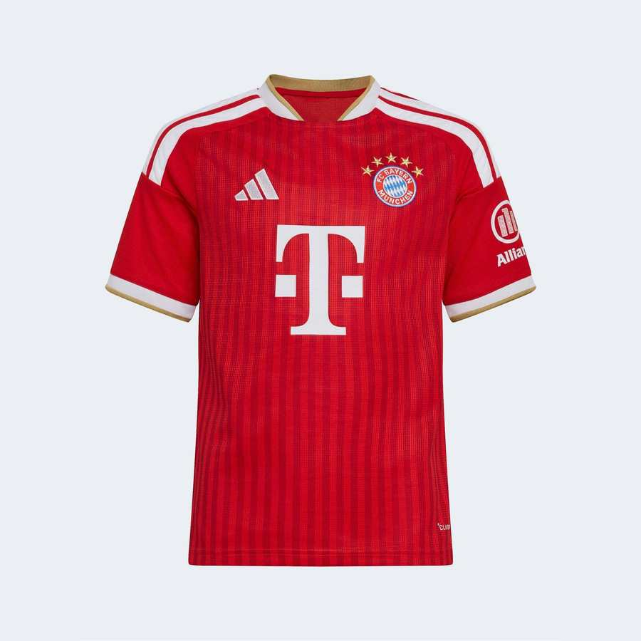
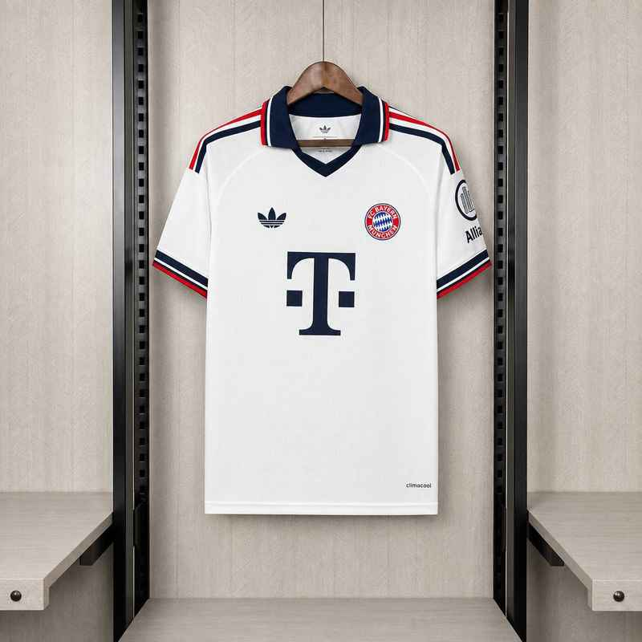

Camisa do Bayern de Munique disponível agora
Estas são as camisas do Bayern de Munique que temos fotografadas e prontas para pedido. Todas na modelagem masculina, versão torcedor, coleção 26/27. Clique na peça para abrir o WhatsApp já com o modelo escrito na mensagem.


Quanto custa a camisa do Bayern de Munique
O preço cai conforme a quantidade: R$150 na peça avulsa, R$100 cada a partir de 3 peças e R$80 cada a partir de 5. Pode misturar times e tamanhos para chegar na quantidade — não precisa ser tudo do Bayern de Munique.
Versão jogador ou versão torcedor?
A versão torcedor tem modelagem mais solta e tecido mais encorpado: é a mais pedida para o dia a dia e para jogar bola no fim de semana. A versão jogador é mais justa ao corpo e mais leve, igual à que o atleta usa em campo. As duas saem pelo mesmo preço.
Também temos do Bayern de Munique
- Kit infantil do Bayern de Munique — camisa e calção juntos
- Camisa retrô do Bayern de Munique
- Calção do Bayern de Munique
- Tudo do Bayern de Munique no catálogo
Não achou o modelo que queria?
Trabalhamos com 217 times entre clubes e seleções. Se o uniforme do Bayern de Munique que você quer não está aqui, chama no WhatsApp que a gente procura.
Falar no WhatsApp